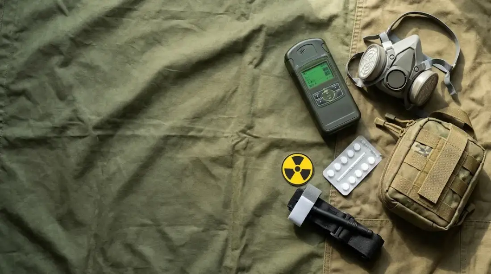
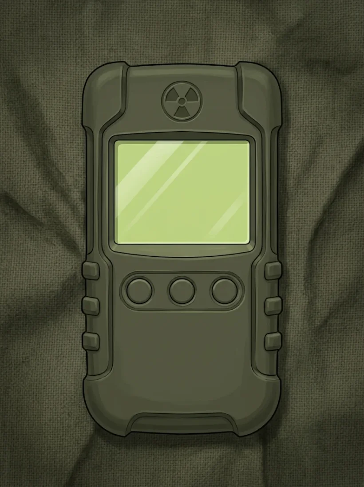

Практичне заняття № 5
Завдання та зміст військово-польової терапії. Бойовий стрес, посттравматичний стресовий розлад. Медико-тактична характеристика ядерної зброї. Радіаційні ураження.
Працюйте самостійно, без підручника і без обговорення з сусідами. Час — до кінця пари.
Як виконувати
- Введіть прізвище, ім’я, групу і номер варіанта, який назвав викладач. Натисніть «Почати».
- Виконайте всі 4 блоки. Тести: оберіть одну відповідь. Розрахункові задачі: впишіть число (дробову частину через кому). Ситуаційні задачі: прочитайте умову і дайте відповіді на питання під нею. Відповідність: оберіть пару в кожному рядку. Послідовність: натискайте кроки по черзі.
- Відповіді можна змінювати, поки не натиснули «Завершити». Завершити можна лише після відповіді на всі завдання. Внизу видно, скільки вже виконано.
- Натисніть «Завершити і отримати оцінку». Результат автоматично потрапить до викладача. Пройти контроль можна один раз.
- Покажіть екран з результатом викладачу.
Якщо сторінку випадково закрили — відкрийте посилання знову на тому самому пристрої: відповіді збережуться.
Усього 68 балів. Оцінка за 5-бальною шкалою: 90–100 % — «5», 75–89 % — «4», 60–74 % — «3», менше 60 % — «2».
Практичні навички заняття
Кожна навичка — практичне вміння з РП у вигляді ситуації або міні-гри з реальною сценою. Неправильна дія має наслідок: ви бачите, що сталося з людьми, а шкала стану падає. Критична помилка — невдача, навичку доведеться почати заново. Після правильного кроку бачите обґрунтування.
Дозиметр-радіометр
Навчальний прилад з покажчиком, що коливається, як справжній. Оберіть завдання, виконайте вимірювання і запишіть результат.

Повірка дійсна до 03.2027. Кнопки: живлення · режим · відлік.
Тренування перед контролем
Тут відповідь видно одразу. Результати нікуди не надсилаються.
Натисніть картку, щоб перевернути.
Потренуйтеся перед контролем
Розрахунки навчальні. Реальні рішення приймають за показами приладів, інструкціями та офіційними вказівками.
Накопичена доза
D = P × tЗахист відстанню
P₂ = P₁ × (r₁ / r₂)²Правило працює для точкового джерела. На рівномірно забрудненій території так спрощено не рахують.